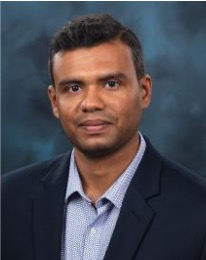

Quantum Computing for PDEs:
Algorithms, Applications & Challenges
A full-day workshop at IEEE Quantum Week 2026 surveying the state of the art in quantum algorithms for partial differential equations — and charting the path to practical utility.
Workshop summary
QC4PDE 2026 surveys the state of the art in quantum algorithms for solving partial differential equations — from quantum linear solvers and tensor networks to quantum Monte Carlo methods — and examines their application to pressing problems in fluid dynamics, structural mechanics, nuclear energy/physics, systems biology, and finance.
By uniting researchers from algorithms, software, hardware, and domain sciences, the workshop equips attendees with a clear picture of where quantum-PDE solvers stand today and what milestones must be reached to deliver practical utility.
Background expected: a basic background in quantum computing. Not required: prior experience with classical numerical techniques for solving PDEs. We particularly encourage participation from students and early-career researchers.
Applications
- Forward & inverse problems in fluid mechanics
- Solid mechanics & structural engineering
- Biological & biomedical systems
- Climate & weather modeling
- Nuclear energy & physics
- Quantitative finance
Algorithms
- Quantum linear solvers (HHL & successors)
- Hamiltonian simulation
- Tensor networks
- Variational methods
- Quantum stochastic PDE solvers
- Amplitude estimation & QMC
Software & workflows
- Hybrid quantum-classical frameworks
- State preparation & readout
- Error mitigation
- Benchmarking pipelines
- End-to-end resource estimation
- HPC integration
Submit your work
We invite original contributions on quantum algorithms for partial differential equations and related challenges in algorithms, software, hardware, and applications.
Topics of interest
Submissions are welcome on any of the topics listed above, including but not limited to: novel quantum algorithms for linear and nonlinear PDEs; resource estimation and benchmarking; state preparation and readout strategies; tensor-network and quantum-inspired methods; applications to fluid dynamics, structural mechanics, biological systems, climate, nuclear physics, and quantitative finance; hybrid HPC-quantum workflows; and noise-resilient implementations.
Submission
Submissions are managed via EasyChair. Papers should follow the IEEE QCE workshop paper guidelines.
EasyChair submission link will be activated when QCE 2026 opens workshop paper submissions.
Format & review
Workshop papers follow IEEE QCE submission guidelines. Papers are limited to four pages (including references). Refer to the QCE 2026 site for formatting templates. The papers will be single-blind peer reviewed. Accepted papers will be included in the IEEE QCE 2026 proceedings.
Key deadlines
All deadlines are anywhere on Earth (AoE). Dates are aligned with IEEE QCE 2026; check the official QCE site for the authoritative version.
Specific workshop day within Quantum Week to be announced. See QCE 2026 submission deadlines ↗.
Workshop schedule
A full-day workshop comprising three 90-minute sessions. Each session features three 15-minute contributed and invited talks (12 min talk + 3 min Q&A) and a 45-minute panel discussion segment.
Detailed schedule with confirmed speakers and titles will be posted closer to the workshop date.
Workshop committee
The 2026 organizing committee brings together expertise across national labs, industry, and academia.


Registration & venue
QC4PDE 2026 is open to all registered IEEE QCE 2026 attendees. Both in-person and virtual attendance options are available through QCE.
The conference takes place at the Metro Toronto Convention Centre, Toronto, Ontario, Canada. Recordings will be available to registered attendees through the QCE virtual platform.